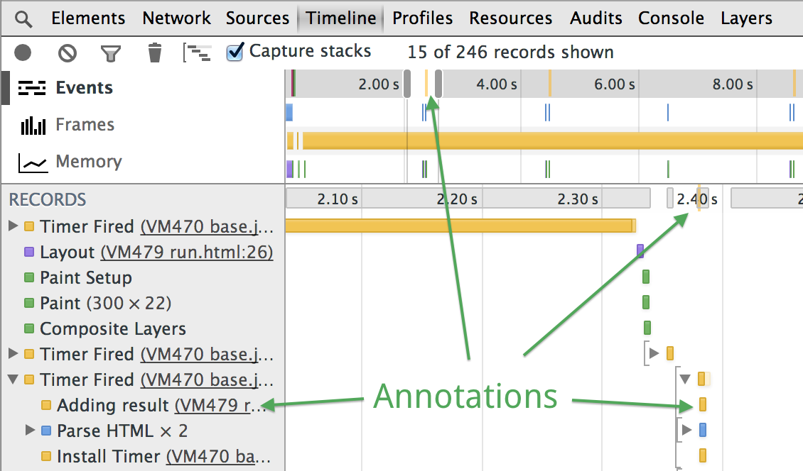
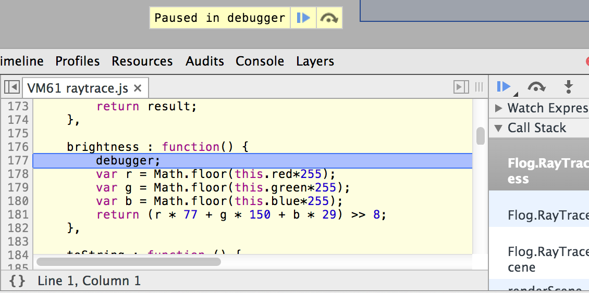

Log diagnostic information to help debug your web page or application.
Enter commands that interact with the document and the Chrome DevTools.
You also may evaluate normal JavaScript expressions.
This documentation provides an overview and common uses of the console.
You may browse the Console API and Command Line API reference material to understand more functionality.
Basic Operation
Opening the Console
The JavaScript Console is available in two places.
The Console panel provides primary access.
It also is available from within any other panel by using the Drawer.
To open the Console tab, do one of the following:
Use the keyboard shortcut Command + Option + J (Mac) or Control + Shift + J (Windows/Linux).
Select > More Tools > JavaScript Console.
A clean console view.
To open the drawer console press the Esc key on your keyboard or click the Show Drawer button in the upper right corner of the Chrome DevTools window.
The console in the drawer while on the elements panel.
Clearing the console history
To clear the console's history, do one of the following:
Right-click or Ctrl-click anywhere in the Console and choose Clear Console from the context menu that appears.
Enter the clear() Command Line API at the shell prompt.
Use the keyboard shortcut Cmd + K, ^ + L (Mac) Ctrl + L (Windows and Linux).
Message Stacking
The console will stack consecutive messages that contain the same output.
This helps keep the information provided to you as concise as possible.
Timestamps disabled (default)
Timestamps enabled
Examples of the two stacking states.
Sample code for testing console stack modes.
msgs = ['hello', 'world', 'there'];
for (i = 0; i < 20; i++) console.log(msgs[Math.floor((i/3)%3)])
Frame Selection
The console can operate within different frames of the page.
The primary page is the top frame for the document.
An iframe element for example would create its own frame context.
You may specify the frame by using the dropdown beside the filter button.
Selecting a secondary frame.
This image shows how the window origin has changed between the top frame and the selected secondary frame.
Using the Console API
The Console API is collection of methods provided by the global `console` object defined by DevTools.
One of the API's main purposes is to log information to the console while your application is running.
You can also group output visually in the console to reduce visual clutter.
Writing to the console
The console.log() method takes one or more expressions as parameters and writes their current values to the console.
A simple write to the console.
var a = document.createElement('p');
a.appendChild(document.createTextNode('foo'));
a.appendChild(document.createTextNode('bar'));
console.log("Node count: " + a.childNodes.length);
Display of the example code in the console.
Multiple parameters will concatenate into a space-delimited line.
console.log() with multiple parameters
console.log("Node count:", a.childNodes.length, "and the current time is:", Date.now());
Output of multiple parameter console.log()
Errors and Warnings
Errors and warnings act the same way as normal logging.
The difference is error() and warn() have styles to bring attention to them.
The console.error() method displays a red icon along with red message text.
The console.warn() method displays a yellow warning icon with the message text.
Using console warn and error methods.Using the error() method.
function connectToServer() {
console.error("Error: %s (%i)", "Server is not responding",500);
}
connectToServer();
How connectToServer() displays in the console.
Using the warn() method.
if(a.childNodes.length < 3 ) {
console.warn('Warning! Too few nodes (%d)', a.childNodes.length);
}
Example warning output.
Assertions
The console.assert() method conditionally displays an error string (its second parameter) only if its first parameter evaluates to false.
A simple assertion and how it displays.The following code will cause an error message in the console only if the number of child nodes belonging to the list element is greater than 500.
console.assert(list.childNodes.length < 500, "Node count is > 500");
How an assertion failure displays in the console.
Filtering console output
You can filter console output by its severity level by selecting one of the filter options.
Activate filters under the filter funnel icon located in the upper-left corner of the console panel.
The following filter options are available:
All
Shows all console output.
Errors
Only show output from console.error().
Warnings
Only show output from console.warn().
Info
Only show output from console.info().
Logs
Only show output from console.log().
Debug
Only show output from console.timeEnd() and console.debug().
Filter enabled for showing only errors.
Grouping Output
You can group related output together with the group commands.
The group command takes a single string parameter to set the name of the group.
The console will begin to group all subsequent output together.
To end the grouping you only need to call groupEnd().
Simple grouping exampleExample code:
var user = "jsmith", authenticated = false;
console.group("Authentication phase");
console.log("Authenticating user '%s'", user);
// authentication code here...
if (!authenticated) {
console.log("User '%s' not authenticated.", user)
}
console.groupEnd();
Example output
Log groups may also nest within each other.
This is useful to see a large group in smaller pieces at a time.
This example shows a log group for the authentication phase of a login process.
The code:
var user = "jsmith", authenticated = true, authorized = true;
// Top-level group
console.group("Authenticating user '%s'", user);
if (authenticated) {
console.log("User '%s' was authenticated", user);
// Start nested group
console.group("Authorizing user '%s'", user);
if (authorized) {
console.log("User '%s' was authorized.", user);
}
// End nested group
console.groupEnd();
}
// End top-level group
console.groupEnd();
console.log("A group-less log trace.");
Nested groups output in the console.
When you are using groups heavily it can be very useful to not see everything as it happens.
For these times you can automatically collapse groups by calling groupCollapsed() instead of group().
console.groupCollapsed() usageExample code:
console.groupCollapsed("Authenticating user '%s'", user);
if (authenticated) {
...
}
console.groupEnd();
groupCollapsed() output.
Viewing structured data
The table() method provides an easy way to view similar data objects.
This will take the properties of an object and create a header.
Row data comes from each indexes properties value.
A table in the console using two arrays.
Example code:
The second parameter to table() is optional.
You may define an array containing the property strings you wish to display.
A console table using a collection of objects.
Example code:
function Person(firstName, lastName, age) {
this.firstName = firstName;
this.lastName = lastName;
this.age = age;
}
var family = {};
family.mother = new Person("Susan", "Doyle", 32);
family.father = new Person("John", "Doyle", 33);
family.daughter = new Person("Lily", "Doyle", 5);
family.son = new Person("Mike", "Doyle", 8);
console.table(family, ["firstName", "lastName", "age"]);
The output of the example code.
String substitution and formatting
The first parameter passed to any of the logging methods may contain one or more format specifiers.
A format specifier consists of a % symbol followed by a letter that indicates the formatting that applies to the value.
The parameters following the string apply to the placeholders in order.
The following example uses the string and digit formatters to insert values into the output string.
You will see Sam has 100 points in the console.
console.log("%s has %d points", "Sam", 100);
The full list of format specifiers are as follows:
%s
Formats the value as a string
%i or %d
Formats the value as an integer.
%f
Formats the value as a floating point value.
%o
Formats the value as an expandable DOM element. As seen in the Elements panel.
%O
Formats the value as an expandable JavaScript object.
%c
Applies CSS style rules to the output string as specified by the second parameter.
This example uses the digit specifier to format the value of document.childNodes.length.
It also uses the floating point specifier to format the value of Date.now().
The code:
console.log("Node count: %d, and the time is %f.", document.childNodes.length, Date.now());
The output of the previous code sample.
Formatting DOM elements as JavaScript objects
When you log a DOM element to the console it displays in an XML format.
This is the same view as the Elements panel.
To display the JavaScript representation you may either use the dir() method or the object format specifier in a log() statement.
The different views for logging an element.
log() view
dir() view
Styling console output with CSS
The CSS format specifier allows you to customize the display in the console.
Start the string with the specifier and give the style you wish to apply as the second parameter.
Styling log informationExample code:
console.log("%cThis will be formatted with large, blue text", "color: blue; font-size: x-large");
Example code output.
Measuring how long something takes
A timer starts by calling the time() method.
You must pass a string to the method to identify the time marker.
When you want to end the measurement call timeEnd() and pass it the same string passed to the initializer.
The console logs the label and time elapsed when the timeEnd() method fires.
Example code and output for timing JavaScript execution.Example Code:
console.time("Array initialize");
var array= new Array(1000000);
for (var i = array.length - 1; i >= 0; i--) {
array[i] = new Object();
};
console.timeEnd("Array initialize");
Output in the console:
When a Timeline recording is taking place during a time() operation it will annotate the timeline as well.
This is useful when tracing what your application does and where it comes from.
How an annotation on the timeline looks from time().
Marking the Timeline
The Timeline panel provides a complete overview of where the engine spends time.
You can add a mark to the timeline from the console with the timeStamp().
This is a simple way to correlate events in your application with other events.
Note: The timeStamp() method only functions while a Timeline recording is in progress.
The timeStamp() annotates the Timeline in the following places:
A yellow vertical line in the Timeline's summary and details view.
It adds a record to the list of events.
Example code:
function AddResult(name, result) {
console.timeStamp("Adding result");
var text = name + ': ' + result;
var results = document.getElementById("results");
results.innerHTML += (text + "<br>");
}

Timestamps in the timeline.
Setting breakpoints in JavaScript
The debugger; statement will begin a debugging session.
This is equivalent to setting a breakpoint at this line in the script.
Calling brightness() begins the debug session.Example code:
brightness : function() {
debugger;
var r = Math.floor(this.red*255);
var g = Math.floor(this.green*255);
var b = Math.floor(this.blue*255);
return (r * 77 + g * 150 + b * 29) >> 8;
}
Example output:

Counting statement executions
The count() method will log the provided string along with the number of times the same string has been provided.
The string may have dynamic content.
When the exact statement is given to count() on the same line the number will increment.
An example count() with some dynamic content.
Example code:
function login(user) {
console.count("Login called for user " + user);
}
users = [ // by last name since we have too many Pauls.
'Irish',
'Bakaus',
'Kinlan'
];
users.forEach(function(element, index, array) {
login(element);
});
login(users[0]);
Output of the code sample:
Using the Command Line API
The console is more powerful than a simple log output directory.
It also is a full terminal prompt in the scope of the current web page.
The Command Line API offers the following features:
Convenience functions for selecting DOM elements
Methods for controlling the CPU profiler
Aliases for a number of Console API methods
Monitoring events
View event listeners registered on objects
Evaluating expressions
The console will evaluate any JavaScript expression you provide when pressing Enter.
It provides auto-completion and tab-completion.
As you type an expression property name suggestions appear.
If there are multiple matches ↑ and ↓ will cycle through them.
Pressing → will select the current suggestion.
For a single suggestion Tab will also select the suggestion.
Some simple expressions in the console.
Selecting Elements
There are a few shortcuts for selecting elements.
These save you valuable time when compared to typing out their standard counterparts.
Returns an array of elements that match the specified XPath.
Examples of target selection:
$('code') // Returns the first code element in the document.
$$('figure') // Returns an array of all figure elements in the document.
$x('html/body/p') // Returns an array of all paragraphs in the document body.
Inspecting DOM elements and JavaScript heap objects
The inspect() function takes a DOM element or JavaScript reference as a parameter.
If you provide a DOM element the DevTools will go to the Elements panel and display that element.
If you provide a JavaScript reference then it will go to the Profile panel.
When this code executes in your console on this page, it will grab this figure and display it on the Elements panel.
This takes advantage of the $_ property to get the output of the last evaluated expression.
The console stores the last five element and object selections.
As you select an element in the Elements panel or an object in the Profiles panel, that pushes onto the history stack.
$x provides access to the history stack.
Remember computers begin counting from 0; this means the latest item is $0 and the oldest item is $4.
Monitoring events
The monitorEvents() method instructs the DevTools to log information on the specified targets.
The first parameter is the object to monitor.
All events return if the second parameter is not provided.
To specify the events to listen to you may pass either a string or an array of strings as the second parameter.
Listen to click events on the body of the page.
monitorEvents(document.body, "click");
If a supported event type that the DevTools maps to a set of standard event names then it will listen to the events for that type.
The Command Line API has a full mapping of event types to the events they cover.
To stop monitoring events you call the unmonitorEvents() method and give it the object to stop monitoring.
Stop listening to events on the body object.
unmonitorEvents(document.body);
Controlling the CPU Profiler
The profile() function begins a JavaScript CPU profile.
You may pass in a string to name the profile as well.
To stop a profile call profileEnd() in the same way you called the initializer.
Create a new profile without providing a name.
profile()
profileEnd()
Example profile
If you provide a label that is the heading.
Profiles group together if you create multiple profiles with the same label.
The Console has four settings you can modify in the general tab of the DevTools settings dialog:
Hide network messages
Instructs the console to not show logs from network issues. For example, 404 and 500 series errors will not be logged.
Log XMLHttpRequests
Determines if the console logs each XMLHttpRequest.
Preserve log upon navigation
Determines if the console history is not deleted when you navigate to another page.
Show timestamps
When a statement is made to the console this will display the timestamp for the call. This will disable message stacking.
Summary
The Chrome DevTools provides a robust console.
You should now understand how to begin using this to store information and grab elements.
This functionality is still scratching the surface of possibilities.
The web is your playground and these are your building blocks.
 > More Tools > JavaScript Console.
> More Tools > JavaScript Console.